上週末卡ㄋㄟ家說他們要去苗粟，看到3P+柯妮女王都要去圍堵他們！
二話不說立刻加入圍堵行列，不過收到線報時已經有點晚了！
所以一點半才出發，３點１５分就到目的地苗粟"自然風情"！！開超快的！

因為大家在等，所以開車進去前快速的拉下車窗拍張大門口照
進去後也來不及去參觀餐廳，就直奔大草原嘍！
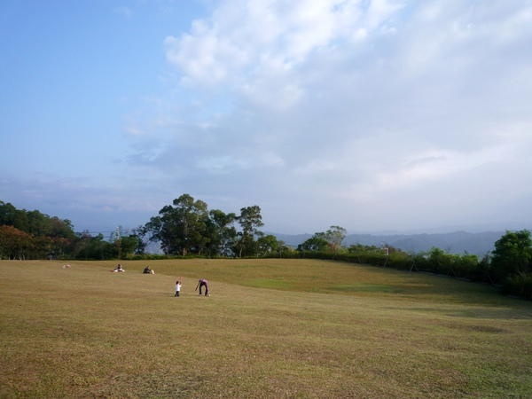
說真的這裡的view很不錯，放眼望去就是大片廣濶的草皮，很舒服
再往遠一點看過去也沒有任何的遮避物，讓人覺得非常的心曠神怡呀！
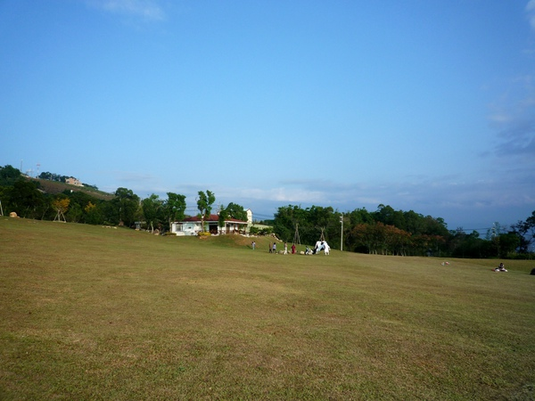
那天很豬頭帶一個沒吃飽的相機出門，照片拍的不多超可惜的
好在還有幫卡卡拍了張很英挺的照片，超可愛的！
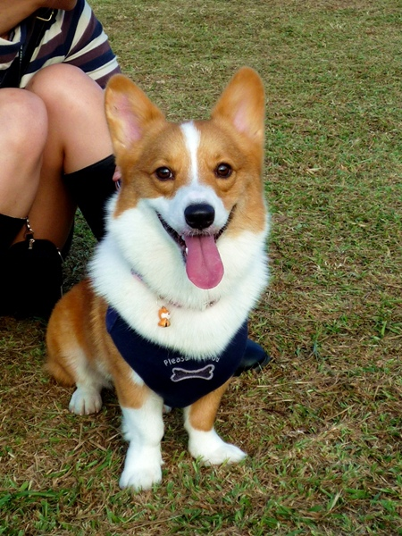
當然嘍！最重要的目的是要來拜見副會長順便幫他洗頭！？
果然摩卡卡一看到卡ㄋㄟ，依舊很白目的先啄了他的頭好幾下
話說摩卡卡每次跟別人玩都會把人家的頭弄的很濕！ 但自己卻完全沒事
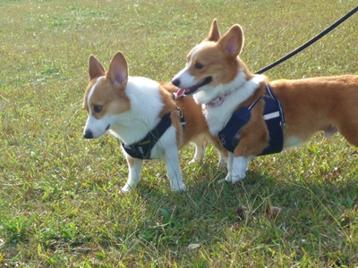
當天副會長心情很不錯歐！一轉頭就給摩卡卡熱情的一吻。
日久生情果然是真的！
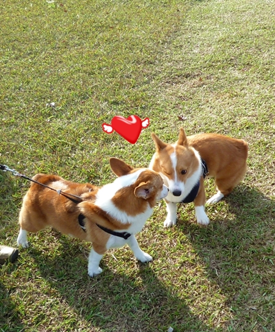
最棒的是還有就是可以跟3P玩！歐耶~~
這次可終於讓我摸到POPO、噴噴還有胖達達啦！
超可愛的P家招牌
但奇怪的是我家猛哥拍照都不拍正面，一個人躲在一旁側拍是怎樣？
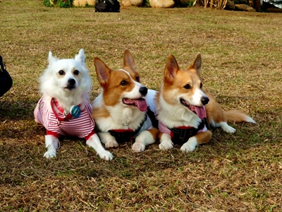
還有柯妮女王，小柯妮的毛超柔軟的！好好摸
摸她的時候一點也不覺得她像女王，是個會撒嬌的小女生。

不過聽說小柯妮愛的是可飛，因為可飛很man！
娘炮完全不是她的菜 哈哈
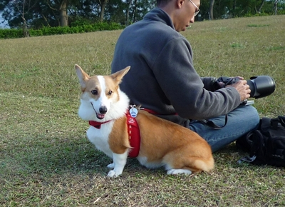
P家父子擋一見到摩卡卡馬上熱情的向前打招呼！
不過卡卡每次都會出現"受驚嚇"的臉，其實根本也沒怎樣
他就會自己在那亂彈亂跳的。
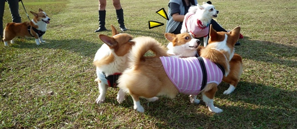
我好愛被一群毛小孩圍著歐，覺得好幸福！
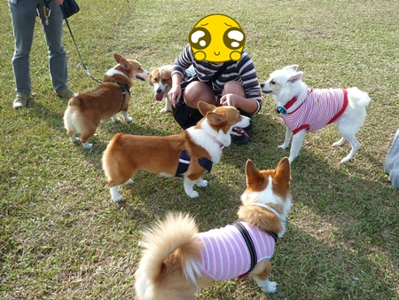
我說卡ㄋㄟ真的是運動健將耶！跑超快的！
從小坡上往下衝的時候速度太快還把慢吞吞的摩卡卡撞翻了一圈
超好笑的！
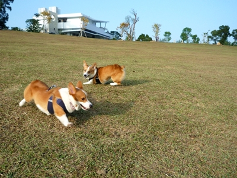
從頭到尾都很high的可愛噴噴也跟卡卡在大草地追逐
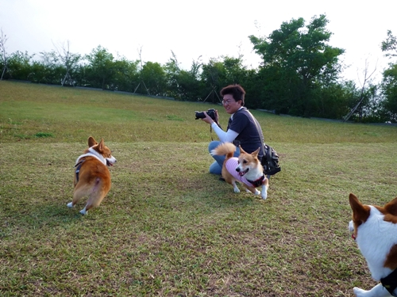
愛撒嬌的小胖達，一直靜靜的待在麻麻旁邊，好乖！好乖！
看到他的時候突然覺得他好高呀！
哈哈～P麻說我看過慣了短腿柯基，誤把胖達也列入短足行列
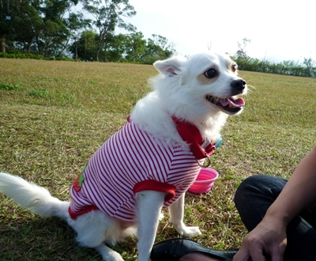
妙妙劉POPO，他超級可愛
那天我一直抓他來摸摸幫他按摩，因為他會發出舒服的小豬聲，笑死我了！
因為我兒子不撒嬌，導致我對會撒嬌的小孩都特愛
（卡ㄋㄟ就是一個撒嬌鬼典範 ）
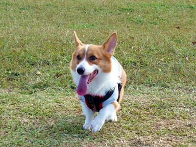
不過那小子對別人倒是挺熱情的嘛！
我每次要摸他他就給我來個 "鬥退嚕" 
難道他知道P麻會做好多好吃的，所以去巴結！？
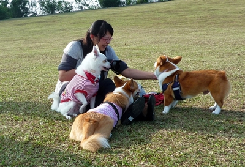
哇屋~這張小DC還拍出星茫耶！厲害了吧！
其實是摩卡拔自己後製的啦！請他幫忙修個圖，一直在玩效果
弄了一個多小時居然修好不到10張！很會摸！

最後當然是由副會長帶隊，準備要拍合照嘍！
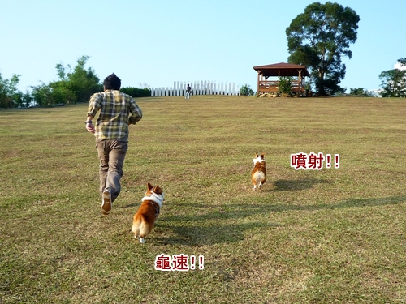
那天真的很開心，希望還有機會一起出來玩！
謝謝大家等我們，下次線報會再抓的精準一點！哈哈哈
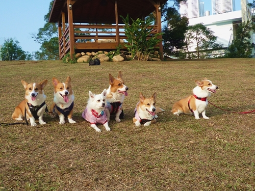
拍完大合照，相機也差不多沒電了！
以後相機一定要隨時保持飽滿的狀態啦～
延伸閱讀
3P家>>苗栗卓蘭．自然風情(上) 苗栗卓蘭．自然風情(下)
媽寶&柯妮>>苗栗自然風情小聚
卡內少爺>>看星星的好地方．自然風情